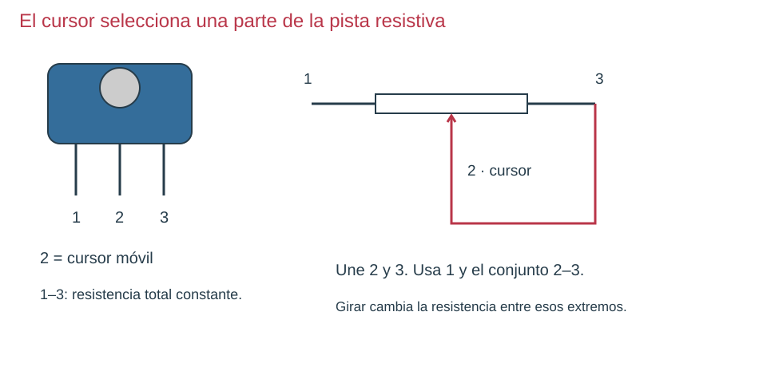
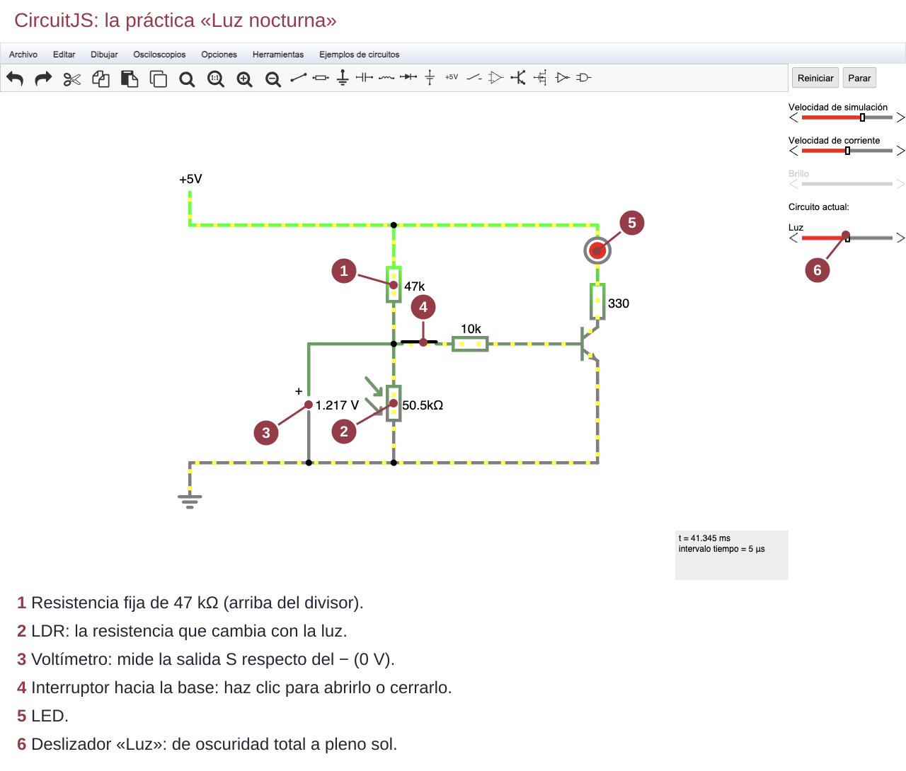
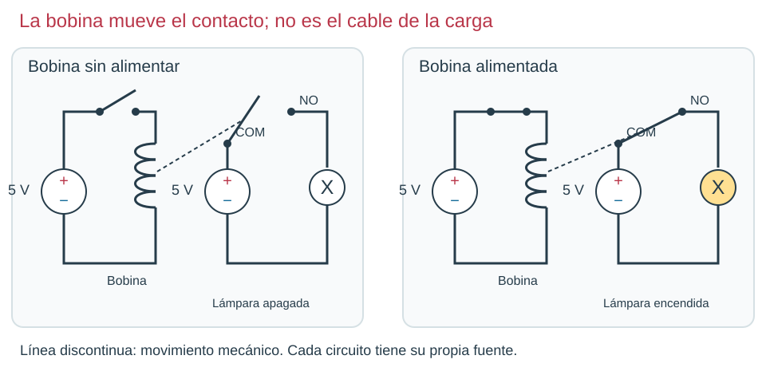

Contenido
- sensor: pieza que nota un cambio de lo que le rodea. Ejemplo: la LDR nota la luz.
- LDR: resistencia que cambia con la luz: más luz, menos resistencia. Ejemplo: la de tu luz nocturna.
- NTC: resistencia que cambia con la temperatura: más calor, menos resistencia. Ejemplo: la del detector de calor.
- potenciómetro: resistencia que puedes ajustar girando una ruedecita. Ejemplo: el que decide con cuánta luz se enciende el LED.
- cursor: la patilla central del potenciómetro, la que se mueve al girar. Ejemplo: la patilla 2 de la figura.
- actuador: pieza que convierte la electricidad en luz, sonido o movimiento. Ejemplo: el LED.
Sensores: resistencias que cambian
Un sensor nota un cambio de lo que le rodea. Los nuestros son resistencias cuyo valor cambia:
| Sensor | Qué nota | Cómo cambia |
|---|---|---|
| LDR (fotorresistencia) | La luz | Más luz → menos resistencia. A oscuras, mucha resistencia. |
| NTC (termistor) | La temperatura | La N viene de «negativo»: cuando la temperatura sube, su resistencia baja. Una de «10 kΩ» vale eso a 25 °C. |
Ninguno de los dos tiene polaridad: da igual cómo los conectes. El símbolo de la LDR lleva flechas que entran (recibe luz); el del LED, flechas que salen.
El potenciómetro: una resistencia que se ajusta

Para usarlo como resistencia ajustable se usan un extremo y el cursor. Girando la ruedecita cambias la resistencia. Lo usarás para decidir con cuánta luz se enciende tu luz nocturna.
Cómo funciona una luz nocturna
Juntando lo aprendido: un divisor con la LDR abajo, cuya salida S va a la base de un transistor que enciende un LED.
- Se hace de noche → la resistencia de la LDR sube.
- La LDR es la resistencia de abajo del divisor → la salida S sube.
- Entra más corriente por la base → el transistor deja pasar la corriente del LED → el LED se enciende.
Práctica · Luz nocturna antes de la protoboard

Este circuito es una versión simplificada del que montarás en el taller. El deslizador Luz, a la derecha, va de oscuridad total a pleno sol. Ten a mano la ficha «CircuitJS en 3 gestos».
- Observa. Mueve el deslizador de un extremo a otro. Anota en el apartado 5 del informe la tensión S y cómo está el LED (apagado, débil o encendido) con poca, media y mucha luz.
- Con base y sin base. Deja la luz a la mitad. Haz clic en el interruptor para abrirlo y anota S; ciérralo y anota S otra vez. ¿Por qué cambia?
- Predice y cambia. Vas a cambiar la resistencia de 47 kΩ por una de 100 kΩ. Con 100 kΩ arriba, ¿hará falta más oscuridad o menos para que el LED se encienda? Escribe tu predicción. Después haz doble clic en la resistencia, escribe 100k, pulsa OK, mueve el deslizador y compruébalo.
- Entrega en «Informe de prácticas» como en la práctica anterior: enlace en el texto y archivo guardado. Cierra el apartado 5 del informe explicando la cadena: luz → resistencia de la LDR → S → LED.
Abrir la práctica en una pestaña nueva.
Comprueba tu explicación
Con menos luz la LDR tiene más resistencia, S sube y el LED se enciende. Sin base, S es la salida del divisor sola (unos 2,6 V a media luz). Al conectar la base, el transistor toma corriente del divisor y S baja a algo más de 1 V: es el efecto de la carga que viste en el divisor. Con 100 kΩ arriba, S es menor para la misma luz: hace falta más oscuridad para que el LED se encienda. La resistencia fija decide cuándo responde el circuito.
Ahora tú. Si en la luz nocturna pones la LDR arriba y la resistencia fija abajo, ¿se encenderá el LED al oscurecer?
Ver solución
No: al revés. Con la LDR arriba, al oscurecer cae más tensión en ella y S baja. El LED se encendería con luz.
Para consultar: los actuadores
Un actuador convierte la electricidad en algo que se ve, se oye o se mueve. En esta unidad solo usarás el LED: esta tabla es para que reconozcas los demás cuando los veas. No hace falta estudiarla.
| Actuador | Qué hace |
|---|---|
| LED | Da luz. Tiene polaridad y lleva resistencia. |
| Zumbador | Pita. |
| Motor | Gira. Si inviertes sus cables, gira al revés. |
| Relé | Un interruptor que se cierra solo cuando pasa corriente por una bobina (un pequeño imán eléctrico, o electroimán). Sirve para que un circuito pequeño encienda otro mayor. |
Si tienes curiosidad: cómo funciona un relé

Compruébalo
Relaciona cada componente con lo que hace.
Relaciona cada componente con lo que hace.
", "showMinimize": false, "itinerary": {"showClue": false, "clueGame": "", "percentageClue": 40, "showCodeAccess": false, "codeAccess": "", "messageCodeAccess": ""}, "cardsGame": [{"url": "", "x": 0, "y": 0, "author": "", "alt": "", "audio": "", "color": "#000000", "backcolor": "#ffffff", "eText": "LDR", "urlBk": "", "xBk": 0, "yBk": 0, "authorBk": "", "altBk": "", "audioBk": "", "colorBk": "#000000", "backcolorBk": "#ffffff", "eTextBk": "Menos%20resistencia%20con%20m%C3%A1s%20luz"}, {"url": "", "x": 0, "y": 0, "author": "", "alt": "", "audio": "", "color": "#000000", "backcolor": "#ffffff", "eText": "NTC", "urlBk": "", "xBk": 0, "yBk": 0, "authorBk": "", "altBk": "", "audioBk": "", "colorBk": "#000000", "backcolorBk": "#ffffff", "eTextBk": "Menos%20resistencia%20con%20m%C3%A1s%20calor"}, {"url": "", "x": 0, "y": 0, "author": "", "alt": "", "audio": "", "color": "#000000", "backcolor": "#ffffff", "eText": "Potenci%C3%B3metro", "urlBk": "", "xBk": 0, "yBk": 0, "authorBk": "", "altBk": "", "audioBk": "", "colorBk": "#000000", "backcolorBk": "#ffffff", "eTextBk": "Resistencia%20que%20se%20ajusta%20girando"}, {"url": "", "x": 0, "y": 0, "author": "", "alt": "", "audio": "", "color": "#000000", "backcolor": "#ffffff", "eText": "Rel%C3%A9", "urlBk": "", "xBk": 0, "yBk": 0, "authorBk": "", "altBk": "", "audioBk": "", "colorBk": "#000000", "backcolorBk": "#ffffff", "eTextBk": "Interruptor%20movido%20por%20un%20electroim%C3%A1n"}, {"url": "", "x": 0, "y": 0, "author": "", "alt": "", "audio": "", "color": "#000000", "backcolor": "#ffffff", "eText": "Motor", "urlBk": "", "xBk": 0, "yBk": 0, "authorBk": "", "altBk": "", "audioBk": "", "colorBk": "#000000", "backcolorBk": "#ffffff", "eTextBk": "Gira%3B%20cambia%20de%20sentido%20si%20inviertes%20sus%20cables"}], "isScorm": 0, "textButtonScorm": "Guardar la puntuación", "repeatActivity": true, "weighted": 100, "textAfter": "", "version": 2, "percentajeCards": 100, "type": 2, "showSolution": true, "timeShowSolution": 3, "time": 3, "evaluation": false, "evaluationID": "f96bc37c-5aaf-40e4-af65-a544218a46a6", "id": "idevice-1792152962191-jxwfib05e", "msgs": {"msgSubmit": "Enviar", "msgClue": "¡Genial! La pista es:", "msgCodeAccess": "Código de acceso", "msgPlayStart": "Pulsa aquí para jugar", "msgScore": "Puntuación", "msgErrors": "Errores", "msgHits": "Aciertos", "msgMinimize": "Minimizar", "msgMaximize": "Maximizar", "msgFullScreen": "Pantalla Completa", "msgExitFullScreen": "Salir del modo pantalla completa", "msgNoImage": "Pregunta sin imágenes", "msgEndGameScore": "Comience la partida antes de guardar la puntuación.", "msgScoreScorm": "La puntuación no se puede guardar porque esta página no forma parte de un paquete SCORM.", "msgOnlySaveScore": "¡Solo puede guardar la puntuación una vez!", "msgOnlySave": "Solo puede guardar una vez", "msgInformation": "Información", "msgYouScore": "Su puntuación", "msgAuthor": "Autoría", "msgOnlySaveAuto": "Su puntuación se guardará después de cada pregunta. Solo puede jugar una vez.", "msgSaveAuto": "Su puntuación se guardará automáticamente después de cada pregunta.", "msgSeveralScore": "Puede guardar la puntuación tantas veces como quiera", "msgYouLastScore": "La última puntuación guardada es", "msgActityComply": "Ya ha realizado esta actividad.", "msgPlaySeveralTimes": "Puede realizar esta actividad cuantas veces quiera", "msgClose": "Cerrar", "msgAudio": "Audio", "msgNumQuestions": "Número de tarjetas", "msgTryAgain": "Necesitas al menos %s% de respuestas correctas para obtener la información. Inténtalo de nuevo.", "msgEndGameM": "Has completado el juego. Tu puntuación es %s.", "msgUncompletedActivity": "Actividad no completada", "msgSuccessfulActivity": "Actividad superada. Puntuación: %s", "msgUnsuccessfulActivity": "Actividad no superada. Puntuación: %s", "msgTypeGame": "Relaciona", "msgCheck": "Comprobar", "msgRestart": "Reiniciar"}}